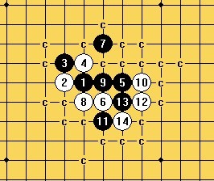

#2 Re:七步断肠 -- 再评世锦赛曹冬胜安德森 作者：蓝天蓝 发表时间：2011-8-15 23:26:25
沙发
#3 Re:七步断肠 -- 再评世锦赛曹冬胜安德森 作者：飞翔 发表时间：2011-8-15 23:47:02
板凳

#4 Re:七步断肠 -- 再评世锦赛曹冬胜安德森 作者：小帮帮 发表时间：2011-8-16 3:27:48
米老师棋感控杀能力真强啊
#5 Re:七步断肠 -- 再评世锦赛曹冬胜安德森 作者：百无禁忌 发表时间：2011-8-16 7:22:29

#6 Re:七步断肠 -- 再评世锦赛曹冬胜安德森 作者：孙弈B 发表时间：2011-8-16 8:41:35
研究的真深哪!
#7 Re:七步断肠 -- 再评世锦赛曹冬胜安德森 作者：没定式随便下 发表时间：2011-8-16 10:42:46
=======上图对应的爱五子棋谱代码如下，以便你拆解：========
h8h9j8g8g9i7i10h7i8k8j7j6i6
======================================================
13这样下呢？
#8 Re:Re:七步断肠 -- 再评世锦赛曹冬胜安德森 作者：米 发表时间：2011-8-16 10:50:39
=======上图对应的爱五子棋谱代码如下，以便你拆解：========
h8h9j8g8g9i7i10h7i8k8j7j6i6k7
======================================================
=======上图对应的爱五子棋谱代码如下，以便你拆解：========
h8h9j8g8g9i7i10h7i8k8i6k7j7j6
======================================================
回复楼上，由于以上两图同型，杀法和另外那个黑11的杀法完全一样，详见我给出的那个链接里面我摆的图。
#9 Re:七步断肠 -- 再评世锦赛曹冬胜安德森 作者：没定式随便下 发表时间：2011-8-16 11:05:43
好像没有这个15啊？请指点。
=======上图对应的爱五子棋谱代码如下，以便你拆解：========
h8h9j8g8g9i7i10h7i8k8i6k7j7j6j10
======================================================
#10 Re:Re:七步断肠 -- 再评世锦赛曹冬胜安德森 作者：米 发表时间：2011-8-16 11:11:13
=======上图对应的爱五子棋谱代码如下，以便你拆解：========
h8h9j8g8g9i7i10h7i8k8i6k7j7j6j10k5k6i5
======================================================
回复楼上：如图。
［ 没定式随便下 于 2011-8-16 11:23:30 时花20金币送鲜花一朵］
#11 Re:七步断肠 -- 再评世锦赛曹冬胜安德森 作者：屏蔽 发表时间：2011-8-16 11:22:58
9楼的有直接VCT，见曹冬在AT上的一盘。
#12 Re:七步断肠 -- 再评世锦赛曹冬胜安德森 作者：隐语者 发表时间：2011-8-16 11:40:27
#13 Re:七步断肠 -- 再评世锦赛曹冬胜安德森 作者：小元 发表时间：2011-8-16 12:10:19

#14 Re:七步断肠 -- 再评世锦赛曹冬胜安德森 作者：江南新绿 发表时间：2011-8-16 17:51:39
=======上图对应的爱五子棋谱代码如下，以便你拆解：========
h8h9j8g8g9i7i10h7k8
======================================================
这个9怎么下？
#15 Re:七步断肠 -- 再评世锦赛曹冬胜安德森 作者：^版徒 发表时间：2011-8-16 17:54:06
=======上图对应的爱五子棋谱代码如下，以便你拆解：========
h8h9j8g8g9i7i10h7k8f7g7i6i8l8f9i5
======================================================
［ 江南新绿 于 2011-8-16 17:56:42 时花20金币送鲜花一朵］
#16 Re:七步断肠 -- 再评世锦赛曹冬胜安德森 作者：五连达人 发表时间：2011-8-16 18:04:29
真复杂啊。。
#17 Re:七步断肠 -- 再评世锦赛曹冬胜安德森 作者：天涯独行客 发表时间：2011-8-16 19:11:03
=======上图对应的爱五子棋谱代码如下，以便你拆解：========
h8h9j8g8g9i7i10h7j7i6j5j6k6f7i4l7f6e8g7
======================================================
这个怎么杀，请指点
#18 Re:Re:七步断肠 -- 再评世锦赛曹冬胜安德森 作者：米 发表时间：2011-8-16 21:05:35
=======上图对应的爱五子棋谱代码如下，以便你拆解：========
h8h9j8g8g9i7i10h7j7i6j5j6k6f7i4l7f6e8g7e5e6g6
======================================================
回复楼上：白20vct。
#19 Re:七步断肠 -- 再评世锦赛曹冬胜安德森 作者：gerbo 发表时间：2011-8-17 1:58:19
这就是研究的力量么。。都发展成这样了。。改天拜读此文。。感觉要弄懂不大容易。。。有时间再慢慢观摩。。
#20 Re:七步断肠 -- 再评世锦赛曹冬胜安德森 作者：gerbo 发表时间：2011-8-17 2:14:07
米老师，刚才看了你的回复，我打了很多字，一时手快，不知按了什么键，也不知道发送到了没，谢谢老师的精彩评论，今天晚上我试着努力弄懂这个局面。
［ 茗弈宽容 于 2011-8-17 10:15:41 时花20金币送鲜花一朵］
#21 Re:Re:七步断肠 -- 再评世锦赛曹冬胜安德森 作者：米 发表时间：2011-8-18 21:53:35
在置顶的《荣耀瑞典》一文中，曹冬老师把这个黑7评为“目前认为白接近必胜”，并提出“但黑13最后唯一的机会没有抓住，这里13最强应该下在k7，这样可利用做v形状迫使白需要补一手”，因此，大家如果有兴趣验证这个黑7必败，不妨参照我的图集中验证这个黑13。我要澄清的一点是，这个黑7被我地毯掉了，不仅仅是那种对方攻不出防不住的白理论必胜，而是验证了所有分支。这个变化白一直能掌控，黑只有能被穷尽的小规模反击。如果有疑问欢迎发出来交流，我大约八天后回来再解答。
#22 Re:七步断肠 -- 再评世锦赛曹冬胜安德森 作者：战乱 发表时间：2011-8-18 23:07:18
学习了。~ 山口 接触不多 很晕乎
#23 Re:七步断肠 -- 再评世锦赛曹冬胜安德森 作者：gerbo 发表时间：2011-8-20 1:06:43
=======上图对应的爱五子棋谱代码如下，以便你拆解：========
h8h9j8g8g9i7i10h7i8k8i6k7j7j6k6e6f7f4j5e3i5h5h3i4e4
======================================================
这个不好杀
- - - - - - - - - - - - - - - - - - - - - - - - - - - - - - - - - - - - - - - - - - - - - - -
=======上图对应的爱五子棋谱代码如下，以便你拆解：========
h8h9j8g8g9i7i10h7i8k8i6k7j7j6k6e6f7f4j5g4i5h5h3i4e4g3
======================================================
刚刚发现用这个可以杀
［此帖子已被 gerbo 在 2011-8-20 1:12:27 编辑过］
#24 Re:七步断肠 -- 再评世锦赛曹冬胜安德森 作者：gerbo 发表时间：2011-8-20 1:34:10
先睡觉了。。这局面太复杂，一点一点看了。今天大概只做了全部的几千分之一的局面，都感觉很累了。。脑子也转不过来了。。(～ o ～)~zZ#25 Re:七步断肠 -- 再评世锦赛曹冬胜安德森 作者：gerbo 发表时间：2011-8-21 1:45:52
=======上图对应的爱五子棋谱代码如下，以便你拆解：========
h8h9j8g8g9i7i10h7i8k8i6k7j7j6i12
======================================================想做个简单的地毯，结果这个15需要太多时间了。。谁能地毯这个15啊~~遇见这个15简直就是复杂指数翻番的表现。。。今天就做到这里了。休息。。。
#26 Re:七步断肠 -- 再评世锦赛曹冬胜安德森 作者：gerbo 发表时间：2011-8-21 1:52:57
对了，补充下，今天我遇见的难题，下图，其实可以非常简化的。呵呵。结果一开始不顺利，走成了很复杂的局面。
=======上图对应的爱五子棋谱代码如下，以便你拆解：========
h8h9j8g8g9i7i10h7i8k8i6k7j7j6l5k6k5l8
======================================================这个15后面的杀被简化了。不过很管用。可惜一开始就想到还原道某局面，结果还原不了，最后还是这个局面简单。真该休息了。。
#27 Re:七步断肠 -- 再评世锦赛曹冬胜安德森 作者：^版徒 发表时间：2011-8-21 3:00:47
 花月败7同型败15.rar呵呵,还在讨论这败七呀,欧洲人一年前就地毯了,继续关注此贴还要持续多久~!
花月败7同型败15.rar呵呵,还在讨论这败七呀,欧洲人一年前就地毯了,继续关注此贴还要持续多久~!［ 米 于 2011-8-21 7:08:17 时花20金币送鲜花一朵］
［ gerbo 于 2011-8-21 18:25:02 时花20金币送鲜花一朵］
#28 Re:Re:七步断肠 -- 再评世锦赛曹冬胜安德森 作者：米 发表时间：2011-8-21 7:07:54
=======上图对应的爱五子棋谱代码如下，以便你拆解：========
h8h9j8g8g9i7i10h7i8k8i6k7j7j6i12k5k6i5l8l5j5l2
======================================================
非常感谢楼上老师提供的信息，我这个月才地毯这个黑7，比欧洲棋友晚很多，也孤陋寡闻不知道早被地毯了。但就从楼上老师发的棋谱看，这个黑15欧洲棋手居然不用上面简单vct，而选择了一个复杂数十倍的必胜方法，恐怕当时研棋时走入了误区。所以抛开我是本帖作者的因素不谈，从中立的角度看，似乎比较一下不同人的地毯也有互相取长补短的学习价值的，也谈不上说已经被地毯就不必关注另外的地毯研究。不过，还是欢迎楼上老师多介绍一些欧洲或其它最新研究结果让我们学习学习，以少走弯路。
［ 岑小鱼 于 2011-8-21 9:53:28 时花20金币送鲜花一朵］
［ gerbo 于 2011-8-21 18:54:45 时花20金币送鲜花一朵］
#29 Re:七步断肠 -- 再评世锦赛曹冬胜安德森 作者：踵酃 发表时间：2011-8-21 7:25:39
 对27楼的说法表示怀疑。。。。
对27楼的说法表示怀疑。。。。
#30 Re:七步断肠 -- 再评世锦赛曹冬胜安德森 作者：侯军学棋 发表时间：2011-8-21 8:05:00
谁把地毯7谱打出来学习学习 谢谢
#31 Re:七步断肠 -- 再评世锦赛曹冬胜安德森 作者：^版徒 发表时间：2011-8-21 12:38:26
=======上图对应的爱五子棋谱代码如下，以便你拆解：========
h8h9j8g8g9i7i10h7i8k8i6k7j7j6i12
======================================================15手，走弯路了？15手谱上没有，这棋型压根不用拆，16手中间一挡，就当15手16手是废子好了，，，，直接套用原14手谱，好像都不用开黑石，照搬一下，，，，有现成的，还去找新方法？，，，好多棋型是相通的，根本不需要拆，先看看有没有做重复动作，或有理容易的套用方法，，，，拿一个局就动手拆的，你拆的方式再简单，那只是在原来的基础上再累了一次，重新找了个方法而矣，，，，，，其实你完全可以套用同型变化。。。。
［此帖子已被 ^版徒 在 2011-8-21 12:42:27 编辑过］
［ gerbo 于 2011-8-21 18:54:18 时花20金币送鲜花一朵］
［ 米 于 2011-8-21 22:04:11 时花20金币送鲜花一朵］
#32 Re:七步断肠 -- 再评世锦赛曹冬胜安德森 作者：gerbo 发表时间：2011-8-21 18:53:19
谢谢赌徒老师，也明白你在31楼说的是给我这样的人听的，其实我在摆这个15的时候，确实第一点就是想局部杀，可惜我没看到，马上就想到还原，正如你所说的，15手很废，16手大不了也废一手（16手我选择的是7与9中间打断下），然后我随意摆了个17，用还原的思维来做，发现很难还原或者说原来的杀点现在不存在了（但不妨碍白优的趋势），我很想摆那个局面出来，现在忘记了具体局面了。悲催。。既然这个7都有定论的，我想即使是这个14后最繁琐的15，也能杀掉得，本打算假如没有哪位高人给出此15的地毯或者某个方法（本没抱什么希望），今天晚上的事宜就是尽力地毯这个15。非常非常感谢赌徒老师传授的一些方法。顺表说下，赌徒老师的精神真好啊。我晚上2点睡的，下午快5点才起来。。。。
看到米老师的简单杀，我晕。。居然我没继续摆下去。实在惭愧了。。。。
#33 Re:Re:七步断肠 -- 再评世锦赛曹冬胜安德森 作者：米 发表时间：2011-8-21 22:03:15
=======上图对应的爱五子棋谱代码如下，以便你拆解：========
h8h9j8g8g9i7i10h7i8k8j7j6k7i9
======================================================
感谢31楼老师交流拆棋心得，我完全赞成老师的观点：拿到一个局面先看同型或相似型，其实这正是我对于25楼那个黑15做的：它和黑15走i9或i11的杀法完全一样，于是估计我只用了一分钟照抄vct。因此我才感觉16挡中间不走vct的必胜比较复杂，就算不用动脑子，光点鼠标都要很长时间。还要麻烦老师一件事：能否给个截图看看欧洲棋手对这个14的必胜在棋盘上标了哪些c点，有没有遗漏重要的变化。
［此帖子已被 米 在 2011-8-21 22:06:13 编辑过］
［此帖子已被 米 在 2011-8-21 22:07:07 编辑过］
#34 Re:七步断肠 -- 再评世锦赛曹冬胜安德森 作者：gerbo 发表时间：2011-8-21 23:55:51
=======上图对应的爱五子棋谱代码如下，以便你拆解：========
h8h9j8g8g9i7i10h7i8k8j7j6j5h6
======================================================
这个脑算对于我这样的人比较难，那就开软件算了。这个算次强13的应对局面，姑且算C2的13.
=======上图对应的爱五子棋谱代码如下，以便你拆解：========
h8h9j8g8g9i7i10h7i8k8j7j6k6f6l5
======================================================这两个13，都可用这个14应对 .